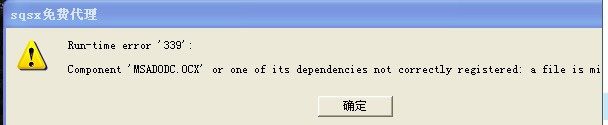

如图：

【Component 'MSADODC.OCX' or one of its dependencies not correctly registered: a file is missing or invalid】
首次使用估计很多人都会出现这样的问题，解决方案也很简单
首先尝试管理员身份运行sqsx，如果不行再执行以下操作
复制或剪切MSCOMCTL.OCX
到C:\windows\system32(64位系统需要同时放在C:\windows\syswow64)里，然后以管理员方式运行cmd，并输入
regsvr32 MSCOMCTL.OCX
如果64位系统输入以上出错的话，那么先执行以下命令：
cd %systemroot%\syswow64
然后再执行regsvr32 MSCOMCTL.OCX